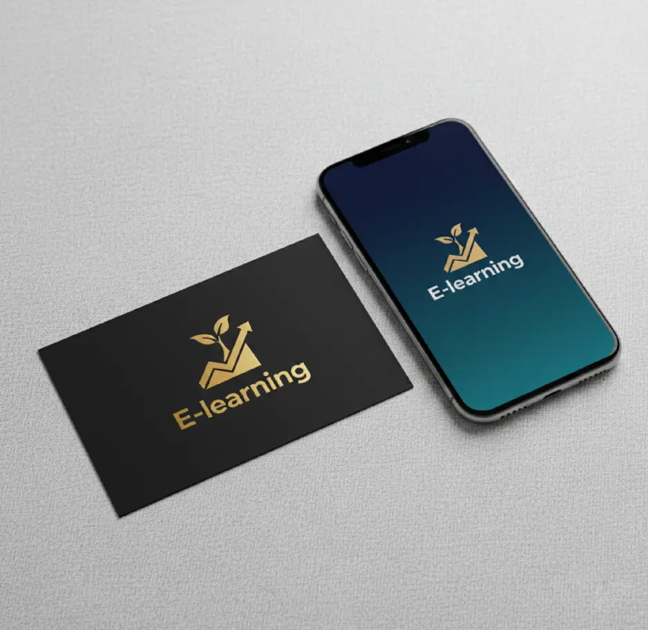

← Todos los proyectos
Campaña · Ecosistema digital
Educación E-learning
Un sistema de comunicación pensado para explicar valor, ordenar contenidos y facilitar la participación.

- Áreas
- Campaña, identidad, piezas digitales
- Sector
- Educación
- Enfoque
- Claridad y reconocimiento
La idea
Aprender empieza por entender
El sistema transforma una propuesta académica compleja en mensajes directos y jerarquías fáciles de recorrer. Una paleta consistente y un emblema reconocible conectan todas las instancias.
La identidad acompaña la captación, la inscripción y la experiencia formativa sin perder unidad.

Siguiente caso